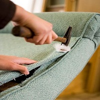
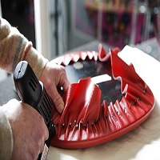
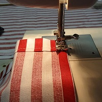

- RIFACIMENTO
- Divani e poltrone antiche
- Restauriamo oggetti d'antiquariato e mobili danneggiati, dando loro nuova vita per le generazioni a venire.

- RIFACIMENTO
- Materassi in lana
- Utilizzando metodi tradizionali o moderni, i prezzi partono da più euro per rivestire un fondello.

- CUSCINI e TENDE
- Su ordinazione, realizziamo: cuscini, fodere e tende.